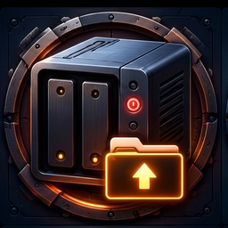

MODULAR · SICHER · NACHVOLLZIEHBAR
Home Assistant.
Mehr Kontrolle. Weniger Komplexität.
HA Secure entwickelt eigenständige Erweiterungen, die Home Assistant sicherer, verständlicher und einfacher verwaltbar machen.
Independent extensions designed to make Home Assistant more secure, understandable and easier to operate.
Optional AIPrivacy by designHuman approvalOpen integration model
DAS HA-SECURE-PRINZIP
KI hilft. Regeln prüfen. Menschen entscheiden.
AI assists. Deterministic checks validate. People stay in control.
KI soll Konfiguration, Diagnose und Administration vereinfachen – bleibt aber optional. Kernfunktionen, Berechtigungen und sicherheitskritische Entscheidungen bleiben deterministisch und freigabepflichtig.
DAS PORTFOLIO
Elf Bausteine. Ein gemeinsamer Anspruch.
Eigenständige Produkte mit klarer Aufgabe – modular kombinierbar, ohne eine zentrale KI-Abhängigkeit.

01 / 11
Synology File Connector
Beta · 0.1.0-beta.3DE Kontrollierte Dateioperationen zwischen Home Assistant und Synology DSM – für gezielte Import-, Export- und Backup-Abläufe.
EN Controlled file operations between Home Assistant and Synology DSM for focused import, export and backup workflows.
USPErgänzt NAS-Monitoring und native Backup-Ziele um gezielte DSM-File-Station-Operationen mit engen Pfad- und Berechtigungsgrenzen.
Goes beyond NAS monitoring and native backup destinations with focused DSM File Station operations and strict path and permission boundaries.

02 / 11
Universal NAS Connector
Beta-Vorstufe · 0.1.0-beta.0DE Ein gemeinsamer Integrationsansatz für unterschiedliche NAS-Hersteller und deren Datei- und Speicherfunktionen.
EN A common integration approach for different NAS vendors and their file and storage capabilities.
USPZiel ist eine einheitliche Adapter- und Bedienlogik über Herstellergrenzen hinweg statt voneinander getrennter Einzellösungen.
The goal is one consistent adapter and interaction model across vendors instead of disconnected vendor-specific tools.
03 / 11
Repo Config Guard
Scaffold · 0.0.1DE Prüft Home-Assistant-Konfigurationen und Repository-Dateien anhand nachvollziehbarer Regeln und Abhängigkeiten.
EN Checks Home Assistant configuration and repository files against traceable rules and dependencies.
USPDer Schwerpunkt liegt auf nachvollziehbaren Diffs, Policy-Prüfungen und freigabepflichtigen Änderungen statt blindem Überschreiben.
Its intended focus is traceable diffs, policy checks and approval-gated changes rather than blind overwrites.

04 / 11
AI Diagnostics
Scaffold · 0.1.0DE Bereitet Home-Assistant-Diagnosen verständlich auf und verbindet technische Befunde mit nachvollziehbaren nächsten Schritten.
EN Turns Home Assistant diagnostics into understandable findings and traceable next steps.
USPGeplant ist eine datensparsame Kette aus Regelprüfung, Secret-Redaction und optionaler KI-Auswertung – ohne automatische Reparaturausführung.
The planned pipeline combines data minimization, secret redaction and optional AI analysis without automatically executing repairs.

05 / 11
Presence Simulator
Scaffold · 0.0.1DE Erstellt konfigurierbare Anwesenheitsprofile mit Zeitfenstern, Bedingungen und ausgewählten Home-Assistant-Geräten.
EN Creates configurable presence profiles using time windows, conditions and selected Home Assistant devices.
USPDie geplante Abgrenzung liegt bei flexiblen Profilen, Konflikterkennung und manueller Übersteuerung – nicht nur bei zufälligen Lichtzeiten.
The intended distinction is flexible profiles, conflict detection and manual override—not just randomized light schedules.

06 / 11
WireGuard Client App
Design · in ArbeitDE Eine eigenständige Home-Assistant-App als Laufzeitbasis für einen kontrollierten WireGuard-Client.
EN A standalone Home Assistant app intended as the runtime for a controlled WireGuard client.
USPDas Sicherheitsziel ist ein eng begrenzter Split-Tunnel-Betrieb mit lokaler API – ohne ungewollte Default-Route oder DNS-Änderung.
The security goal is tightly bounded split-tunnel operation through a local API, without unintended default-route or DNS changes.
07 / 11
WireGuard Client Integration
Scaffold · 0.0.2DE Die geplante Home-Assistant-Oberfläche zur Konfiguration, Statusanzeige und kontrollierten Bedienung der separaten WireGuard-App.
EN The planned Home Assistant interface for configuring, monitoring and controlling the separate WireGuard app.
USPKlare Trennung: Home Assistant übernimmt Bedienung und Orchestrierung; privilegierte Tunneloperationen bleiben in der separaten App.
Clear separation: Home Assistant handles UI and orchestration, while privileged tunnel operations remain in the separate app.
08 / 11
HA Secure Guard
Scaffold · 0.0.1DE Das geplante Kernmodul für Sicherheitsfunktionen, Alarmverwaltung und klar getrennte Admin- und Benutzeroberflächen.
EN The planned core module for security features, alarm management and distinct admin and user interfaces.
USPDer Anspruch ist eine modulare Sicherheitsplattform mit serverseitiger Rechteprüfung und klaren Freigabegrenzen – nicht ein behaupteter Ersatz für etablierte Alarm-Integrationen.
The ambition is a modular security platform with server-side authorization and explicit approval boundaries—not a claimed replacement for established alarm integrations.
09 / 11
Certificate Guardian
Beta · 0.1.0-beta.2DE Überwachung von Zertifikaten und kontrollierte Orchestrierung vorhandener ACME-Komponenten. Beta-Vorabversion (0.1.0-beta.2) auf dem Hauptzweig; Funktionsumfang noch begrenzt, kein Stable-Release.
EN Planned: certificate monitoring and guarded orchestration of existing ACME components. Beta pre-release (0.1.0-beta.2) on the main branch; limited scope, no stable release.
USPZiel ist die Verbindung von Zertifikatsüberwachung mit Vorprüfung und ausdrücklicher Freigabe; automatische Erneuerung ist nicht umgesetzt.
The goal is to combine certificate monitoring with preflight checks and explicit approval; automatic renewal is not implemented.

10 / 11
Inventory Exporter
Beta · 0.1.0-beta.3DE Erstellt einen strukturierten, datenschutzbewussten Snapshot der Home-Assistant-Geräte, Entities, Areas, Labels und Integrationen.
EN Creates a structured, privacy-aware snapshot of Home Assistant devices, entities, areas, labels and integrations.
USPRead-only Inventarisierung mit optionaler Redaktion sensibler Angaben und konfigurierbarem lokalem Export.
Read-only inventory with optional sensitive-data redaction and configurable local export.

11 / 11
Repo Updater
Beta · 0.1.0-beta.7DE Überwacht GitHub-Repositories, erkennt Releases und stellt ausgewählte Revisionen zunächst sicher im Staging bereit.
EN Monitors GitHub repositories, detects releases and stages selected revisions before any installation.
USPMehrere Repositories, feste Commit-Referenzen, Prüfsummen und eine klare Grenze zwischen Bereitstellung und späterer Freigabe.
Multiple repositories, immutable commit references, checksums and a clear boundary between staging and any future approval-gated installation.
WAS UNS VERBINDETOptional statt zwingend
Die Kernfunktionen sollen auch ohne KI-Anbieter nutzbar bleiben.
Nachvollziehbar statt Blackbox
Regeln, Abhängigkeiten, Status und Diagnosen sollen überprüfbar bleiben.
Freigabe statt blinder Autonomie
Privilegierte und produktive Änderungen erfordern klar begrenzte menschliche Autorisierung.
Stand: 24.11.2026. Beta-Vorabversionen auf dem Hauptzweig: Synology File Connector, Inventory Exporter, Repo Updater, Certificate Guardian und Universal NAS Connector (0.1.0-beta.0); keine Stable-Releases. Repo Config Guard, AI Diagnostics, Presence Simulator (Domain ha_secure_presence_simulator), WireGuard Client Integration und HA Secure Guard liegen als Scaffold vor (grüne Validierung, aber nicht funktionsfertig); die WireGuard Client App ist in Arbeit. Hardware-/TestVM-Tests stehen für diese Produkte aus. Statusangaben sind keine Zusage von Funktionen, Terminen oder Testplätzen.
HA Secure is under active development. Product status is shown transparently; planned capabilities are not presented as released features.
BETA-PROGRAMMFrühzeitig testen. Gezielt mitgestalten.
Merke dein Interesse für einzelne HA-Secure-Produkte vor. Einladungen erfolgen erst, wenn ein Produkt Beta v1-Stable erreicht und intern freigegeben wurde.
Register your interest in selected products. Invitations follow only after Beta v1-Stable readiness and internal approval.
Beta-Programm ansehen ↗MITREDENWas sollte Home Assistant einfacher machen?
Interesse, Ideen und Rückmeldungen sind willkommen. Feedback wird über GitHub gesammelt; dafür muss keine E-Mail-Adresse auf dieser Website veröffentlicht werden.
Share feedback, suggest a feature or let us know which project interests you.
Feedback auf GitHub geben ↗